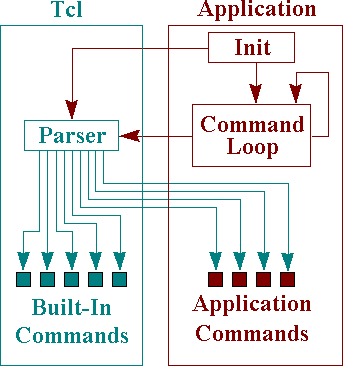
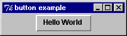
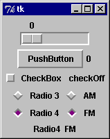
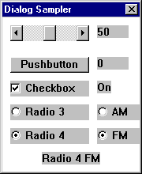

This paper was written and compiled by Robert M. Boyce and Dr Peter J. Knaggs based upon a project undertaken as part of an honours degree at the University of Paisley [Boy96]. The Tk toolkit is a freeware user interface widget toolkit based upon the Tcl scripting language developed by Dr John K. Ousterhout. Originally developed under the X11 windows system, the Tk toolkit has recently been ported to the 32 bit Microsoft Windows platform. In this paper we look at an interface between this port of Tcl/Tk and MPE's ProForth for Windows. The interface was to be designed in such a way that a Forth programmer could utilise the Tk toolkit to build user interfaces to Forth programs, in place of the cumbersome and difficult to learn win32 API (Application Programmer Interface) currently provided by ProForth for Windows.
With the development of the Tk toolkit, a powerful Motif like widget set based upon the Tcl scripting language, a new role emerged for Tcl. When combined with Tk, Tcl provides the application developer and indeed the end user with a simple, powerful Graphical User Interface (GUI) designer. The nature of Tcl/Tk allows the GUI to be built dynamically, and also allows for the end product to have several user definable interfaces. The parsing of an external script file at run time to determine the look and feel of the interface being the most common use. This has many applications, eg, multi-lingual applications and different interfaces for novice and expert users. Tcl/Tk also allows a series of small applications to be tied together to make one super application, with Tk providing an interface between these applications. A typical example is a word processor, composed of separate text editor, spell checkers, grammar checker etc. with the end user being provided with a common, user-configurable, interface. If the user frequently uses a sequence of commands he could bind all these commands to a button/keypress/mouse click which he himself defined in the interface script.
Recently Tcl and Tk have been ported to other operating systems and environments, from the original incarnation on a UNIX X-Windows environment. These other systems include Macintosh's system 7 and Microsoft's Windows (32 bit versions only).
A possible solution to this is a universal scripting language. In the case of Tcl the language interpreter is provided as a C library, as C is by far the most common development language in use at this time. This scripting language would provide basic programming constructs such as variables and procedures. A key point, however, is that the scripting language must be easily extensible. Tcl was designed to be used with a two language approach to application development. Where the scripting language would provide the high level control procedures and a conventional language such as C would provide the functionality. This is desirable because a scripting language cannot achieve the performance of conventional languages. Conventional languages however are not as easy to program as scripting languages nor are they easily interchangeable. Figure 1 shows the basic structure of a common Tcl application.

button .hello -text " Hello World"
creates a button called .hello with the text Hello World on its face (Figure 2).
This is clearly an improvement over the standard Win32 API provided by ProForth, which is
complex and requires a great deal of specialist knowledge on the part of the programmer. For
example, the command:
10 10 100 20 BS_PUSHBUTTON Z" Hello World" "BUTTON" CONTROL
creates a similar button to the above Tk code, in actual fact due to the myriad of defaults
supplied to the Tk button, it is more pleasing to the eye.

button, checkbutton, radiobutton, menubutton, menu, canvas, label, entry, message, listbox, text, scrollbar, scale, frame, toplevelLike most widget toolkits Tk uses geometry managers to control the display of its widgets. Geometry managers are a set of algorithms which control the display of on screen objects. The main Tk geometry manager is the packer and it is used as follows:
pack <widget list> <options>
It is important to note that the widgets are not displayed until managed by a geometry manager.
Geometry managers also have parameters which alter their function, such as padding, stack order,
and anchoring. For a more detailed description of geometry managers see
[Wel95].
As with all windowing systems Tk requires an event loop to process commands, the event loop for
Tk is called Tk_Mainloop, and is provided in the Tk41 Dynamic Link Library (DLL).
It is possible however to process all existing events by flushing the event queue with
TclWinFlushEvents, it is this function that is used to allow TkForth to build GUI's
interactively.
Given the programmability, power and the elegance of the ProForth system it would provide a powerful Windows development tool if the complexity of developing the GUI could be overcome. Given the ease with which Tk Applications can be developed, and it's interactive nature, it would seem like an ideal solution to providing the ProForth programmer with an ability to develop complex interfaces quickly.
Unlike most current widget toolkits, neither model is object-oriented as Tk is not strongly object-oriented. The widget structure may present a superficial resemblance to object-oriented methods but there is no official class structure and no inheritance amongst widget types [Ous90]. This was a conscious decision by the developers of Tk.
:button word, followed by the
name of the button and then a list of optional parameters. These parameters can be used in any
order, and indeed it not necessary to include any of them at all, as there are defaults for all.
Example:
This creates a Tk button with the text "Hello World" on the face. The Forth word:button Hello text>" hello World" callback> cb-greeting ;
cb-greeting
is bound to this button through a callback structure. The Forth word greeting must be defined
before the callback> parameter is supplied to the button. The Forth programmer can then
use the Hello word to refer to the button. The parameters supplied at creation can be
altered through the use of the configure command, as follows:
Hello configure text>" Hello Universe" ;
The callback word is created from a common word through the use of the >callback
word ( word-address <Forth_Name> <Tcl_Name> -- ),
as follows:
' greeting >callback cb-greeting Tcl-greeting
Given the predefined word greeting.
The configure command can also be followed by any number of optional parameters, providing
the widget in question supports that parameter. It was decided that this model should be interactive.
Thus allowing the developer to build/modify the application from the ProForth debug window.
This model works by building Tcl command strings in a buffer from the ProForth commands entered at the terminal (or from a file) and passing these strings for Tcl to evaluate. This string is then passed to Tcl for evaluation. This was an important design decision and was taken mainly for the following reasons:
>callback which also defines a Tcl function to invoke the
callback. A convention of using a cb- prefix for callback words and a Tcl- prefix
for Tcl callback functions has been adopted. The callback function is passed as a parameter to a widget,
via the callback> option. Callbacks may be defined on creation of the widget or later
through the configure command. The callback system has been defined in this manner in order
to ensure that it is possible to call the original word from inside other Forth words, if the word were
to be defined with a special definer, this would not be possible.
In the following example, a greeting word is defined, a callback word is defined
(cb-greeting) to execute this word. A Tcl function (Tcl-greeting) to invoke the
callback is also defined. Finally a button widget is defined (Hello) which displays the text
"Hello World" on the button and executes the Tcl function Tcl-greeting when pressed.
This function invokes the cb-greeting callback, which executes the greeting word in turn.
: greeting ." Hello World" ; ' greeting >callback cb-greeting Tcl-greeting :button Hello text>" Hello World" callback> Tcl-greeting ;
Tcl_GetVar and Tcl_SetVar
functions. Ousterhout recommends this method
[Ous94c]
as the arguments are passed as strings, thus allowing Tcl to maintain it's own
internal variable space.
Three new Forth words were defined to implement variable passing TkVar,
Tk@, and Tk!. These words were designed to be externally
similar to the predefined Forth words Variable, @ and
!. It is important to note however that these variables are stored as
zero terminated strings, and they must be formatted as such before a Tk!
or formatted into the desired form after a Tk@.
"" button ." tk-make-object :button
The "" button ." is the tk representation of the command
to create a new button, whereas the :button word is the Forth command to
create a new button. The :button word is then used as follows:
:button hello
This creates a Forth word hello which is used to refer to the button.
This word effectively places a ".hello" string in the
tcl-text buffer which is passed to Tcl to evaluate commands. Other widget
defining words can be defined in the same way, such as:
"" label ." tk-make-object label:
10, grey80 etc.
.hello.
This is required as the TkForth does not require a preceding "."
in widget paths whereas this is necessary for Tk.
tk-make-absolute-option
"" -activebackground" tk-make-absolute-option activebackground>
The activebackground> word is then used in conjunction with a widget defining
word or a widget command word (see next section) to set the active background colour.
Example:
creates a label widget with:label MyLabel activebackground> grey80 ;
grey80 as its background colour when active.
Quote options (defined using tk-make-quote-option) are used as follows:
text>" Hello"xscrollcommand> f.scroll setf.scroll is a widget and set is the name of the widget
command. The other configuration options are used in a similar manner.
configure command which allows the programmer to alter a configuration
option after the widget has been created. Widget commands are defined in TkForth
using a definer word, Tk-make-command. This is used to create new words
which place their Tk equivalent in the tcl-text buffer. For example:
"" configure" tk-make-command configureconfigure which places the text
" configure " in the tcl-text buffer. The reason
why the tk-make-command definer word has the above format and not merely
tk-make-command configure, generating the Tcl string on the fly, is that
some of the Forth words are not the letter for letter identical to the Tcl equivalent,
some of the Forth commands translate into more than one Tcl command. This was decided
upon to simplify the TkForth programmers learning curve, and maintain some consistency
of interface. Also it is possible with the above word to alter the Tcl command with
subsequent releases, should the syntax be changed while allowing TkForth programs to
run with no modification, thus introducing an element of future proofing.
; (semicolon) word. This word is used in a similar manner to the standard
word. It is used to finish definitions of Tk widgets, and also at the end of packer commands.
The new ; is defined as part of the Tk vocabulary, this vocabulary is invoked
when a reference to a Tk widget or a geometry manager is made. The next ; is
then judged to be a command to send the tcl-text buffer to Tcl for evaluation,
it then restores the current vocabulary to the standard.
tk` word
and is used as such:
Tk` button .hello -text " Hello World" `Tcl_Eval function.
"" set tk_strictMotif 1 " $>asciiz rel>abs tcl-evaluate
 |
 |
|
| Figure 3: TkControls Example | Figure 4: ProForth API Controls Example |
The ProForth 32-Bit API requires 98 lines of complex API calls to provide the above example. TkForth achieves similar functionality with only 52 lines. Coding the above example in C and providing a Tcl script file requires around 150 lines of source code (note that blank lines and comments are not included in these counts). This reduction in the size of the source code is made all the more remarkable when one considers the performance of the TkForth system. While not as efficient as the raw API calls, TkForth appears to perform admirably alongside the Tk/C method. This slight loss of performance when compared to raw API calls is minimal and is forgivable when one considers the reduced complexity and specialist knowledge required.